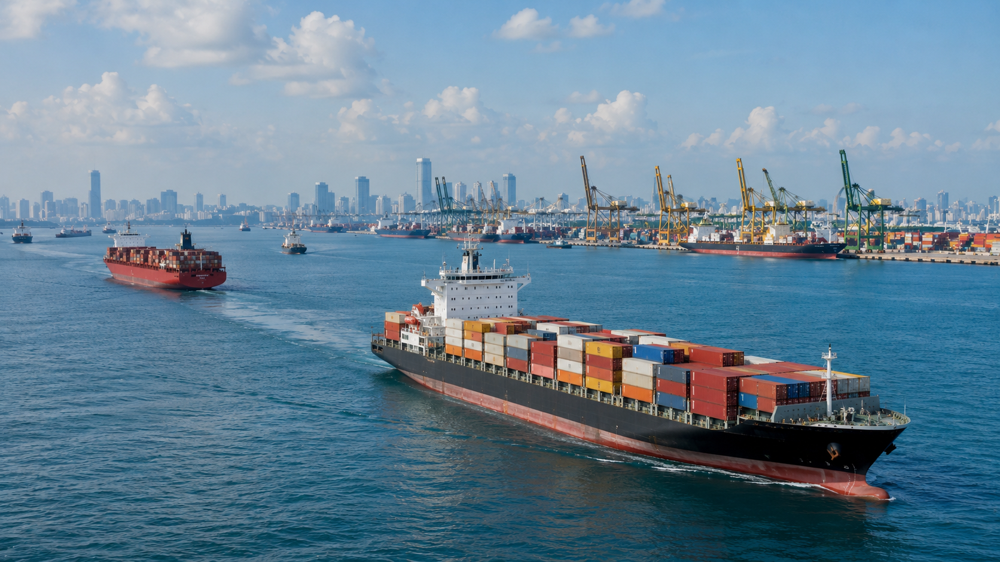

Indo-Pacífico

O Indo-Pacífico é o palco de importantes dinâmicas de comércio internacional e de competições militares. A região abriga rotas comerciais cruciais e fluxos de investimento que impactam o mundo inteiro.
As alianças militares e os acordos de segurança se multiplicam à medida que as potências buscam consolidar sua influência. A crescente atuação de blocos regionais e parcerias trilaterais molda o ambiente estratégico.
O comércio marítimo é outro fator importante: portos, corredores logísticos e cadeias de suprimento passam por mudanças rápidas devido a novas demandas e tensões políticas.
Por isso, o Indo-Pacífico é visto como um eixo central da geopolítica, conectando interesses econômicos, estratégicos e de poder em escala global.